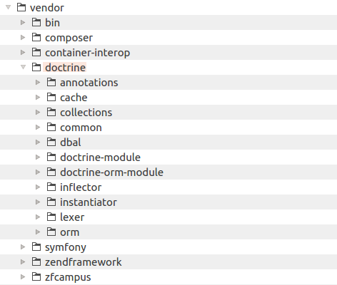

12.3. Integrando Doctrine ORM con Zend Framework 3
Para una fácil integración con Zend Framework 3 el proyecto Doctrine provee los siguientes componentes (que de hecho son modules de ZF3);
DoctrineModule es un modulo de ZF3 que provee la funcionalidad básica de Doctrine que necesita el componente ORM.
DoctrineORMModule integra el Mapeo objeto-relacional (ORM) de Doctrine con Zend Framework 3.
Cada uno de estos componentes de Doctrine es distribuido como un paquete instalable de Composer y esta registrado en el catalogo Packagist.org. Esta es una manera muy parecida a la que Zend Framework 3 usa para instalar sus componentes.
Como los paquetes de Composer pueden depender de otros paquetes es suficiente declarar la dependencia sobre DoctrineModule. Este paquete depende de DoctrineModule y de otros componentes de Doctrine (Doctrine\ORM, Doctrine\DBAL, Doctrine\Common, Doctrine\Annotations, etc.). Así, cuando se instala aquel componente Composer instalará los otros componentes necesarios automáticamente.
12.3.1. Instalar el Componente Doctrine Components con Composer
Para instalar el componente Doctrine primero agregamos una dependencia al archivo composer.json ubicado en el directorio raíz de la aplicación web (en este libro comúnmente nos referimos a este directorio como APP_DIR).
Para agregar la dependencia escribimos las siguientes ordenes en la linea de comandos (reemplazando APP_DIR por el nombre del directorio de nuestra aplicación):
cd APP_DIR
php composer.phar require doctrine/doctrine-orm-module
El comando cd de arriba se usa para hacer al directorio APP_DIR el directorio
de trabajo actual.
El comando require le dice a Composer que agregue el paquete doctrine/doctrine-orm-module
como una dependencia de nuestra aplicación web y que la descargue e instale.
Una vez que ejecutamos los comandos de arriba Composer primero modifica el archivo
composer.json y crea una linea como la de abajo dentro de la llave require:
{
...
"require": {
"doctrine/doctrine-orm-module": "^1.0.9",
...
},
...
}
Luego Composer intentará ubicar el paquete dependiente, descargarlo a nuestra computadora e instalar los archivos dentro del directorio APP_DIR.
Composer imprimirá algunas lineas en la terminal indicando el proceso de instalación.
Como podemos ver en la salida que genera Composer, cuando instalamos el componente DoctrineORMModule
Composer automáticamente instala DoctrineModule y todos los componentes necesarios
de Doctrine (Doctrine\DBAL\Doctrine\ORM, etc.)
Adicionalmente al terminar la instalación Composer "sugiere" instalar algunos paquetes adicionales que pueden ser útiles para nosotros (
doctrine/migrations,doctrine/data-fixtures, etc). Si queremos podemos agregar estas dependencias de la misma manera que antes usando el comando de Composerrequire.
Cuando la instalación termina podemos encontrar los archivos de Doctrine en el directorio APP_DIR/vendor (ver figura 12.4).
 Figure 12.4. Los archivo de Doctrine se guardan en el directorio
Usamos el comando
php composer.phar requirepara instalar Doctrine por primera vez. Una vez que los archivos composer.json y composer.lock son modificados por Composer podemos instalar o actualizar todas las dependencias escribiendo los comandosphp composer.phar installyphp composer.phar updaterespectivamente desde la línea de comandos.
12.3.2. Cargar los Módulos de Integración al Arrancar la Aplicación
Una vez que hemos instalado DoctrineORMModule y todas sus dependencias necesitamos agregar las siguientes lineas en el archivo APP_DIR/config/modules.config.php para activar los módulos:
<?php
return [
// Add the Doctrine integration modules.
'DoctrineModule',
'DoctrineORMModule',
//...
);
Las lineas de arriba le dicen a ZF3 que debe cargar los módulos DoctrineModule y DoctrineORMModule al inicio de la aplicación.
12.3.3. Visión General de la Configuración de Doctrine
Para usar Doctrine con nuestra aplicación web basada en ZF3 tenemos que proveer su configuración. La configuración le dice a Doctrine que base de datos están presentes, como conectar una base de datos (que base de datos, controlador, servidor, nombre de usuario y contraseña usar), donde están ubicadas las clases-entidad y como extraer sus anotaciones (metadata), como guardar la caché de los datos (en el sistema de archivos o con una extensión), etc. Esta sección pretende dar una idea general de como la configuración de Doctrine se ve.
La configuración por defecto de Doctrine se ubica en el archivo de configuración module.config.php de DoctrineORMModule. Podemos ver la figura 12.5 abajo para tener una idea de como se ve el árbol de configuración de Doctrine 47. Además, podemos revisar el archivo module.config.php de DoctrineORMModule y ver también el árbol de configuración.
 Figure 12.5. Representación gráfica del *árbol* de configuración de Doctrine
Figure 12.5. Representación gráfica del *árbol* de configuración de Doctrine
47) El árbol en la figura 12.5 puede ser diferente del que tienes en tu propia aplicación porque algunas llaves fueron omitidas aquí por simplicidad.
Como podemos ver en la figura 12.5 existe una llave de primer nivel llamada doctrine.
Debajo de esta llave hay un numero de sub-llaves que contienen las siguientes configuraciones:
- La llave
connectioncontiene la lista de todas las bases de datos a las que la aplicación puede conectarse. Para cada conexión de base de datos hay parámetros como nombre de la clase controladora (driver), servidor, nombre de usuario, contraseña y nombre de la base de datos.
Por defecto hay solo un nombre de conexión llamado
orm_default, podemos agregar más conexiones a la base de datos si lo necesitamos.
La llave
configurationcontiene las configuraciones del ORM, como caché y la ubicación de las entidades-clase proxy auto-generadas, por cada conexión disponible.La llave
drivercontiene la información sobre donde ubicar las clases-entidad por cada conexión a base de datos disponible.La llave
entitymanegercontiene las configuraciones que se usan para instanciar un administrador de entidades por cada conexión a base de datos.La llave
eventmanagercontiene las configuraciones para el administrador de eventos de Doctrine por cada conexión disponible.
Doctrine usa su propia implementación del administrador de eventos. Si queremos podemos crear una clase listener de evento y enganchar algunos eventos. Sin embargo, este un tema avanzado y no es cubierto en este libro.
- La llave
migrations_configurationcontiene las configuraciones para las migraciones de base de datos. Las migraciones de base de datos se usan para inicializar y actualizar el esquema de base de datos de una manera estándar y consistente.
12.3.4. Sobrescribir la Configuración por Defecto de Doctrine
Como ya sabemos a partir del capítulo Operación del Sitio Web la configuración de una aplicación web basada en ZF3 se divide generalmente en dos categorías: configuración general de la aplicación y configuración específica del modulo.
Para guardar la configuración general de Doctrine generalmente usamos el archivo de configuración APP_DIR/config/autoload/global.php o el archivo APP_DIR/config/autoload/local.php. El primer archivo es adecuado para guardar configuraciones que no dependen de un entorno particular mientras que el segundo es adecuado para guardar configuraciones que dependen del entorno (como los parámetros de conexión a la base de datos).
Para guardar las configuraciones específicas de Doctribe para determinados módulos usamos el archivo de configuración module.config.php ubicado dentro de la carpeta config de este módulo. Por ejemplo, este archivo es apropiado para guardar la configuración de ubicación de las entidades.
Cuando un sitio web basado en ZF3 carga su configuración se mezclan todas las configuraciones dentro de un solo gran arreglo para formar el "árbol" final de configuración de Doctrine.
Además, nuestra configuración específica de Doctrine extiende y/o sobrescribe el árbol de configuración definido por DoctrineORMModule.